МИР БРАМЫ (куры)
ОГЛАВЛЕНИЕ

Куры брама: описание породы
Брама – одна из самых популярных пород декоративно-мясо-яичных кур. Эти крупные птицы с выразительной внешностью станут настоящим украшением любого подворья. Они отличаются хорошим здоровьем, быстро откармливаются и легко размножаются. Брама не причинит особых хлопот даже начинающему птицеводу, а опытные заводчики с удовольствием занимаются селекционной работой, улучшая и совершенствуя породу.

Брамы: история разведения
Куры породы брама своим появлением обязаны американским селекционерам. Активная работа над породой началась в позапрошлом веке. Перед заводчиками стояла задача по выведению настоящих мясных кур: крупных, легко откармливающихся, нетребовательных к условиям содержания. За основу были взяты дикие кохинхины из Индокитая и малайские курочки. В процессе селекции участвовали и мясо-яичные породы из Европы. Результатом многолетней работы стали первые брамы, отличающиеся внушительными объемами. Некоторые селекционеры выводили птиц-гигантов, весящих около 7 кг и с трудом перемещающихся.
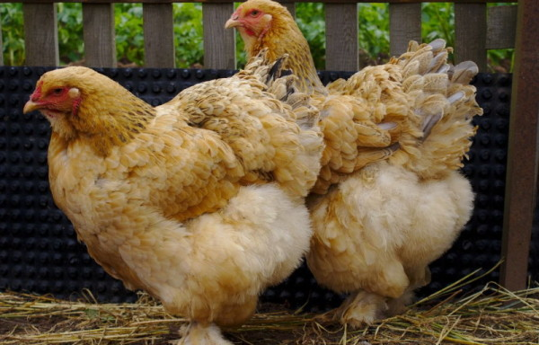Усовершенствовав экстерьер, заводчики стали работать над улучшением оперения, цветовым разнообразием, увеличением яйценоскости. В итоге появилось несколько вариантов окрасов, давших названия подвидам брам: светлая, темная, куропатчатая, палевая. Позже были выведены и карликовые брамы, имеющие те же цветовые вариации.
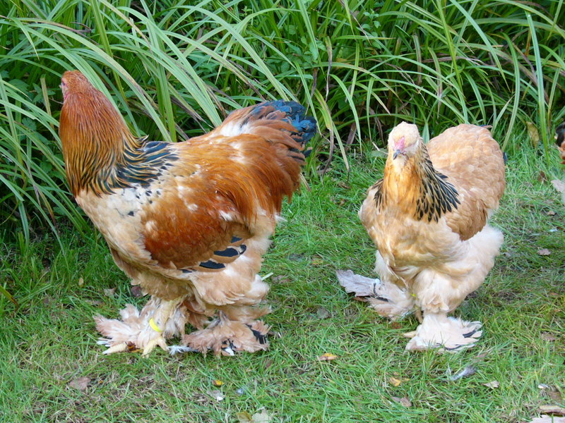Современные представители этой породы выполняют сразу несколько функций. Они отличаются декоративностью и украшают птичий двор, имеют неплохую яйценоскость и быстро откармливаются. Мясо у брам довольно плотное, нежирное, отлично подходящее для диетического питания. Курицы несут 100-120 яиц в год. Размер яиц средний, до 60 г весом, скорлупа кремовая, однотонная.
В промышленных целях брамы не используются, зато они очень любимы владельцами личных подворий. Птицы популярны в Европе и США, причем американские брамы чаще разводятся на мясо, в Европе предпочитают более нарядных декоративных кур. В России брамы ценятся за красоту и хорошую яйценоскость, мясное направление тоже востребовано. Племенной молодняк стоит недешево, так что разведение этой породы может стать неплохим и вполне прибыльным бизнесом.
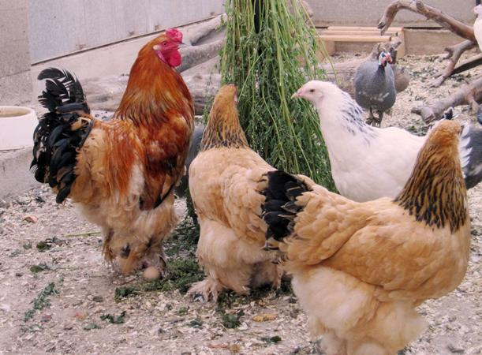Внешний вид и породные признаки
Породистые брамы поражают своей царственной красотой. Это крупные птицы с хорошо развитой мускулатурой и гордой осанкой. Вес петухов от 4,5 до 5 кг, куры весят 3,5-4 кг. Иногда встречаются и более крупные экземпляры. Замечено, что темные брамы имеют более внушительные габариты, чем светлые.
Как и другие мясные породы, брамы имеют довольно низкую посадку, широкую спину и грудь, умеренно длинную шею. Крылья короткие, хвост высокий, короткий, пышный. Объемный корпус красиво контрастирует с маленькой изящной головкой. Гребень среднего размера, резной, насыщенно-красный. Такой же оттенок имеют сережки. Клюв у птиц короткий, темно-желтый, глаза ясные, чистые, ярко-оранжевые. Лапы мощные, умеренно длинные.
Яркая примета брам – пышное и плотное оперение, покрывающее тело сплошным пушистым покровом. На шее имеется объемный воротник, отличающийся от основного окраса. У темных брам он светлый, у светлых – яркий или темный. Птицы очень хорошо одеты, глянцевые перья покрывают не только корпус, но и лапы, образуя забавные мохнатые «штанишки». Такое оперение делает брам практически нечувствительными к холоду, что особенно ценится российскими фермерами
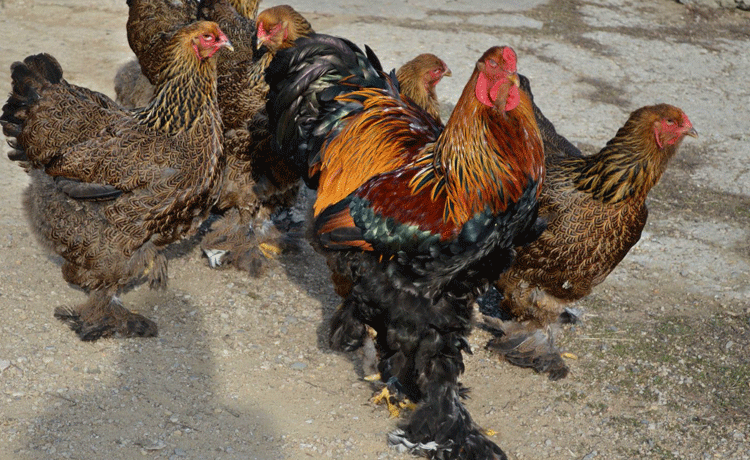 Карликовая брама куропатчатаяПерья у брам должны довольно плотно прилегать к телу. Птица выглядит пышной, пушистой, но не растрепанной. У здоровых кур и петухов перья глянцевые, однородные, с ярким рисунком.
Характеристики кур БрамаОсобенности окраса
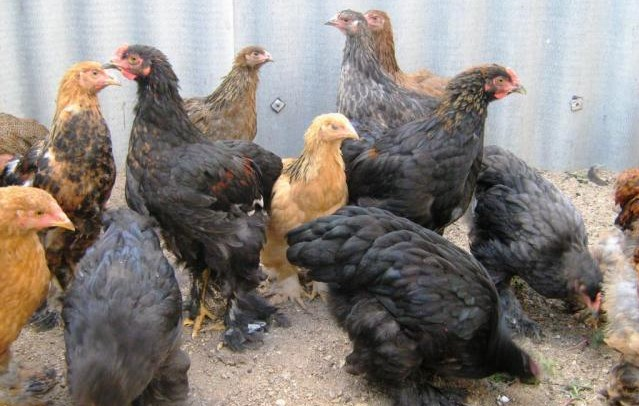Усилиями селекционеров выведено несколько цветовых разновидностей брам. Наиболее популярны светлые (колумбийские) и темные, но у куропатчатых, палевых и красных тоже немало поклонников.

Цыплята каждого подвида имеют пух соответствующего оттенка. Цыплята светлых брам нежно-кремовые, темных – голубовато-серые. Молодняк куропатчатых брам двухцветный, с темными отметинами на голове и спинке. Яйца у этого подвида тоже необычные, украшенные мелкими темными крапинками по кремово-коричневому фону.
Тонкости содержания
Брамы нуждаются в чистом, сухом курятнике с деревянным настилом на полу. Земляной пол пачкает оперение. В курятнике нужно установить насесты, кормушки, поилки. В холодное время требуется подогрев и дополнительное освещение. Чтобы куры хорошо неслись, требуется 12-13 часовой световой день.
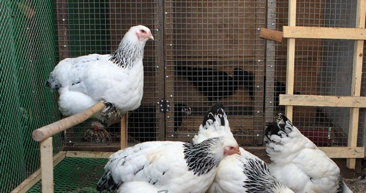Профессиональные заводчики рекомендуют установить принудительную вентиляцию, обеспечивающую постоянный приток свежего воздуха. Браму лучше держать отдельно от остальных кур. Желательно разделить петухов и кур, чтобы птицы вели себя спокойнее и не портили оперение.

Питание брам может быть сухим или влажным. Большинство птицеводов предпочитают комбинированный вариант. Основу рациона составляет дробленое или цельное зерно (пшеница, овес, кукуруза, просо). В смесь добавляется костная, мясная или рыбная мука, соль, вареный картофель, сырые измельченные овощи. Отдельно выкладывают минеральные добавки: мелкий гравий, готовые минеральные смеси. Куры очень любят пророщенную траву, желательно, чтобы она всегда была в доступе. Обязательна свежая вода, которую требуется часто менять.
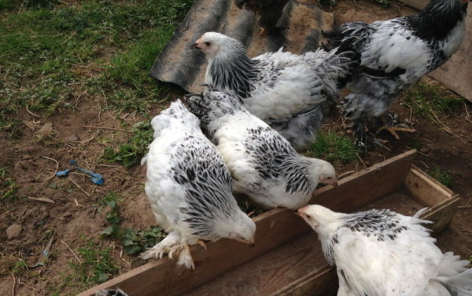Рекомендуется трехразовое кормление приблизительно одинаковыми порциями. Кормушки и поилки нужно периодически дезинфицировать. Чтобы в холодное время года куры сохраняли высокую яйценоскость, можно давать им теплую воду и слегка подогретый корм. Птицам, предназначенным на откорм, можно увеличить порцию зерна на 10-15%.
Крупные и тяжелые брамы не отличаются особой подвижностью. Для их нормального развития стоит организовать птице выгул. Идеальный вариант – огороженный загон с короткой подстриженной травой. При вольерном содержании можно рассыпать небольшое количество зерна в подстилку, что стимулирует птицу активно двигаться, склевывая корм.
Разведение: инструкция для новичков
Разведение брам – занятие интересное, но непростое. Купленное племенное яйцо можно выводить в инкубаторе. 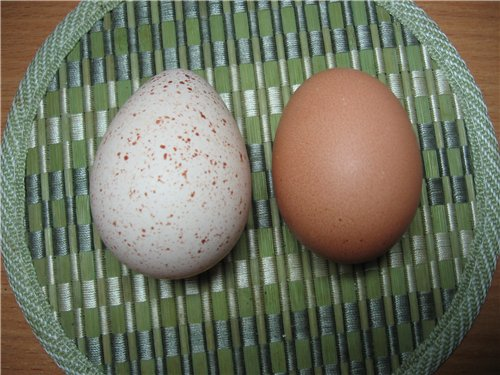
Приобретенный молодняк обязательно выдерживается в карантине. Цыплятам рекомендована вакцинация, предохраняющая их от болезней и ранней гибели. Новорожденным цыплятам рекомендуется давать антибиотики, это существенно увеличит выживаемость. Выводить цыплят нужно весной и в начале лета, чтобы к зиме они смогли окрепнуть и подрасти.
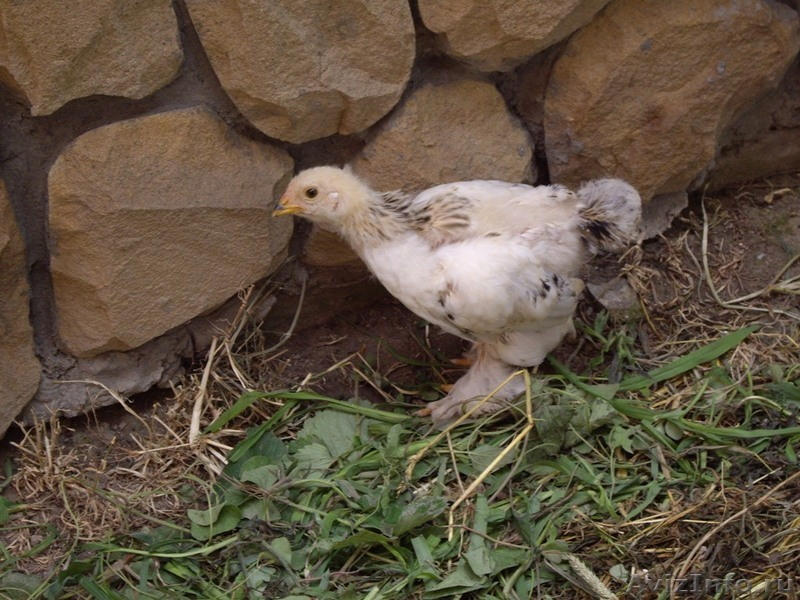Цыплята растут и формируются долго, как и большинство представителей мясных пород. В первые месяцы их покрывает редкий пух, характерная окраска начинает проявляться позже. Для нормального развития цыплятам необходим сбалансированный корм с добавлением витаминов и микроэлементов. Предпочтительно использовать готовые сухие смеси, к которым можно добавлять костную или мясную муку, вареные овощи: морковь, тыкву, картофель, кабачок.
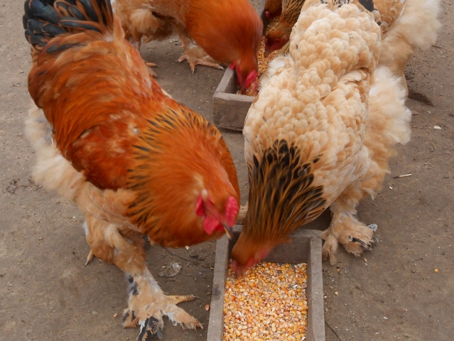Брамы отличные наседки, они хорошо заботятся и о своих, и о чужих цыплятах. Однако из-за своей массы куры могут подавить яйца. Поэтому многие птицеводы предпочитают держать в хозяйстве инкубатор, гарантирующий большую сохранность племенных яиц. В первые три года куры несутся активно, позже количество яиц снижается.
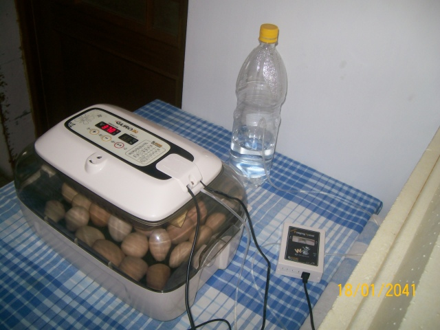Если вы мечтаете о племенном разведении, особое внимание уделите качеству петухов. Именно от них зависит внешний вид потомства, яркость и чистота оперения, красивые стати. Профессиональные птицеводы считают, что новичкам проще выводить темных или палевых брам. Добиться красивого окраса светлых птиц сложно даже опытным селекционерам, большое количество молодняка подлежит выбраковке.
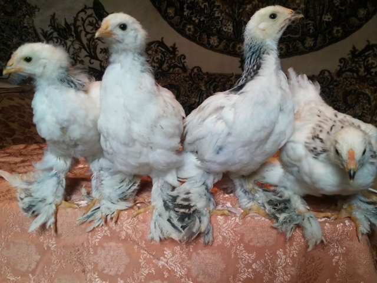Где приобрести породистую птицу
Купить молодняк или яйца брамы можно в племенных хозяйствах или у частных заводчиков. Эта порода неплохо распространена, так что выбрать подходящий питомник несложно. Контакты птицеводов можно найти в интернете или на отраслевых ярмарках.
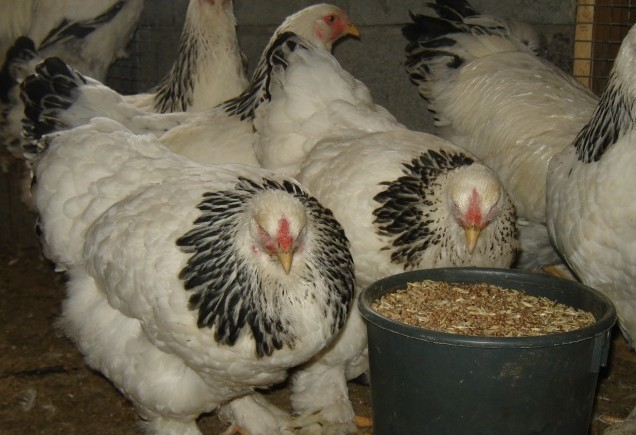Перед покупкой решите, какая именно птица вам нужна. Некоторые хозяйства разводят декоративных брам, они отличаются роскошным оперением. Гораздо реже можно найти брам мясного направления. Отдельный вид – карликовые куры, стремительно набирающие популярность среди любителей оригинальных пород.
Видео — Куры Брама
Email: vitmar08@yandex.ru
Время работы : круглосуточно